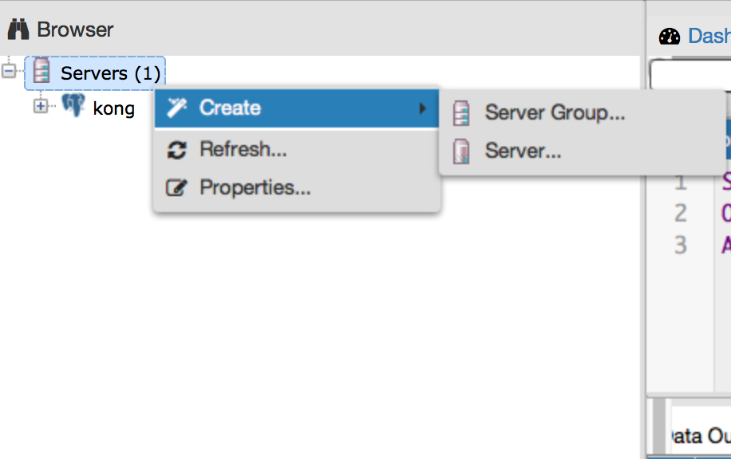
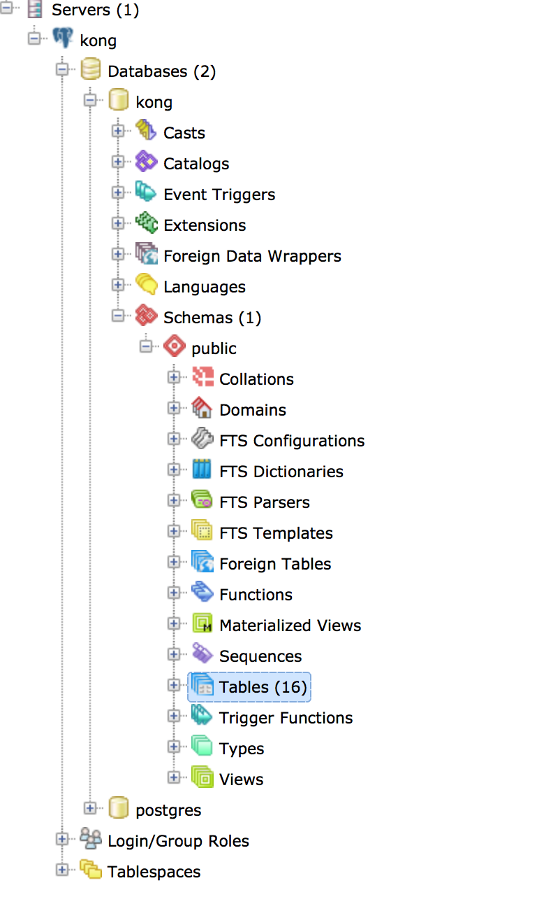

本文适用 CentOS7.0。
安装 kong
首先下载 CentOS 版本， 安装包地址
1 2 3 4
| $ wegt https://github.com/Mashape/kong/releases/download/0.9.6/kong-0.9.6.el7.noarch.rpm $ sudo yum update $ sudo yum install epel-release $ sudo yum install kong-0.9.6.*.noarch.rpm --nogpgcheck
|
安装 PostgreSQL
1 2
| $ sudo yum install http://yum.postgresql.org/9.5/redhat/rhel-7-x86_64/pgdg-redhat95-9.5-2.noarch.rpm $ sudo yum install postgresql95-server postgresql95-contrib
|
init
1
| $ /usr/pgsql-9.5/bin/postgresql95-setup initdb
|
启动
1 2
| $ systemctl start postgresql-9.5.service $ systemctl restart postgresql-9.5.service
|
查看是否启动成功
1
| systemctl status postgresql-9.5.service
|
配置文件位置
1
| /var/lib/pgsql/9.5/data/pg_hba.conf
|
进入PostgreSQL终端
查看用户
创建数据库 kong 用户
为kong创建数据库 kong
1
| $ CREATE DATABASE kong OWNER kong;
|
为 kong 设置密码
1 2
| $ \password kong 注意 `\` 是需要运行的，将密码设置为 kong
|
修改 PostgreSQL 配置文件
1 2 3 4 5 6 7 8 9 10 11 12 13 14 15 16 17
| $ vi /var/lib/pgsql/9.5/data/pg_hba.conf 将配置项修改为如下: # TYPE DATABASE USER ADDRESS METHOD # "local" is for Unix domain socket connections only local all all md5 # IPv4 local connections: host all all 127.0.0.1/32 md5 # IPv6 local connections: host all all ::1/128 md5 # Allow replication connections from localhost, by a user with the # replication privilege. local replication all peer host replication all 127.0.0.1/32 ident host replication all ::1/128 ident
|
- 常用命令
1 2 3 4 5
| 删除用户： DROP ROLE kong 创建用户： CREATE USER kong WITH PASSWORD 'kong'; 赋予权限： GRANT ALL PRIVILEGES ON DATABASE kong TO kong; 删除数据库 ： DROP DATABASE kong; SELECT pg_terminate_backend(pg_stat_activity.pid) FROM pg_stat_activity WHERE datname='youdan' AND pid<>pg_backend_pid();
|
修改 kong 配置文件
可以查看官网进行配置。也可以参考下面的
简单配置，如需优化等配置，请移步官网。
默认的配置文件在 /etc/kong/kong.conf.default ，我们需要拷贝一份作为自己的配置项。
1
| $ cp /etc/kong/kong.conf.default /etc/kong/kong.conf
|
1
| $ vi /etc/kong/kong.conf
|
下面的配置项注释干掉后的样子。
1 2 3 4 5 6 7 8 9 10 11 12 13 14 15 16 17 18 19 20
| #------------------------------------------------------------------------------ # DATASTORE #------------------------------------------------------------------------------ # Kong will store all of its data (such as APIs, consumers and plugins) in # either Cassandra or PostgreSQL. # # All Kong nodes belonging to the same cluster must connect themselves to the # same database. database = postgres # Determines which of PostgreSQL or Cassandra # this node will use as its datastore. # Accepted values are `postgres` and # `cassandra`. pg_host = 127.0.0.1 # The PostgreSQL host to connect to. pg_port = 5432 # The port to connect to. pg_user = kong # The username to authenticate if required. pg_password = kong # The password to authenticate if required. pg_database = kong # The database name to connect to.
|
启动kong
1
| $ kong start --conf /etc/kong/kong.conf
|
如果没有报 PostgreSQL 的错误说明 PostgreSQL 配置成功。
在kong 注册API
1
| $ curl -i -X POST http://localhost:8001/apis/ -d "name=testapi" -d "request_path=/test" -d "upstream_url=http://baidu.com" -d "strip_request_path=true"
|
百度首页 屌屌屌
1 2 3
| curl -i -X POST \ --url http://localhost:8001/apis/testapi/plugins/ \ --data 'name=key-auth'
|
1 2 3
| curl -X POST http://localhost:8001/plugins \ --data "name=basic-auth" \ --data "config.hide_credentials=true"
|
kong-dashboard
echo ‘{“service”: {“name”: “test”, “tags”: [“rails”], “port”: 8000}}’ \
>/etc/consul.d/test.json
PostgreSQL 客户端
- 官方推荐客户端
pgadmin 教程
修改配置 pg_hba.conf 文件
1 2 3 4
| 文件路径： /var/lib/pgsql/9.5/data/pg_hba.conf 添加如下内容，代表任何ip访问时需要密码: host all all 0.0.0.0/0 password
|
修改配置 pg_hba.conf 文件
1 2
| 文件路径： vi /var/lib/pgsql/9.5/data/postgresql.conf 找到 listen_addresses，修改为 listen_addresses = '*'，PostgreSQL 默认只允许本机连接，修改完后可以监听所有的连接请求。
|
创建数据库连接

